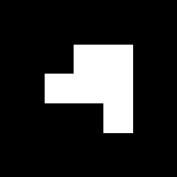

AR 电场线 — 立体电荷（贴方块）
打印下方标记并剪下，把同一种标记贴在一个小立方体（约 5–6 cm 的纸盒）的 5 个面上：顶面 + 四个侧面。底面贴着桌子，不用贴。
这样无论从哪个方向看，摄像头总能看到至少一个面，于是可以绕着方块走一圈从任意角度观察立体电场。
Stick the same marker on 5 faces of a small box (top + 4 sides; the bottom rests on the table). The cube is then trackable from every angle.
贴图方式 Where to stick — 5 faces
共 5 面贴同一个标记（顶 1 + 侧 4）。底面不贴，放在桌上。
立体效果 Cube — 360° 观看
两个方块（+ 和 −）一起放，可在桌面上呈现立体的偶极子电场。
剪下并贴到方块上 · Cut out & stick on the box
+正电荷立方体 — 5 个面（同一标记 value 0）
+ 顶
+ 侧
+ 侧
+ 侧
+ 侧
−负电荷立方体 — 5 个面（同一标记 value 1）
− 顶

− 侧
− 侧
− 侧
− 侧
组装与使用 · Assemble & use
1. 找一个约 5–6 cm 的小立方体纸盒；把 5 张同色标记分别贴在顶面和四个侧面，保留每张标记四周的白边。
2. 在 iPad 的 Safari 中打开 AR 应用（需 HTTPS），点击 Start camera —— 扫描按钮和平面方案共用一个，无需切换。
3. 把 + 方块放进画面看向外发散的电场；− 方块看向内汇聚；两个方块同时出现 → 立体偶极子电场。
4. 因为 5 个面都是同一标记，你可以举着 iPad 绕方块走一圈，从任意角度都能看到电场线。
5. 光线均匀、避免反光；方块离镜头约 20–50 cm 时追踪最稳。
1. 找一个约 5–6 cm 的小立方体纸盒；把 5 张同色标记分别贴在顶面和四个侧面，保留每张标记四周的白边。
2. 在 iPad 的 Safari 中打开 AR 应用（需 HTTPS），点击 Start camera —— 扫描按钮和平面方案共用一个，无需切换。
3. 把 + 方块放进画面看向外发散的电场；− 方块看向内汇聚；两个方块同时出现 → 立体偶极子电场。
4. 因为 5 个面都是同一标记，你可以举着 iPad 绕方块走一圈，从任意角度都能看到电场线。
5. 光线均匀、避免反光；方块离镜头约 20–50 cm 时追踪最稳。